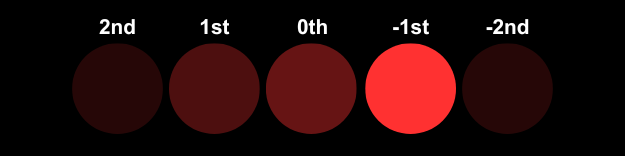
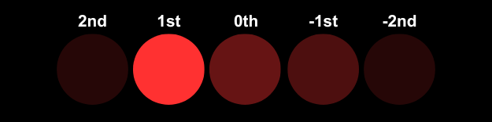
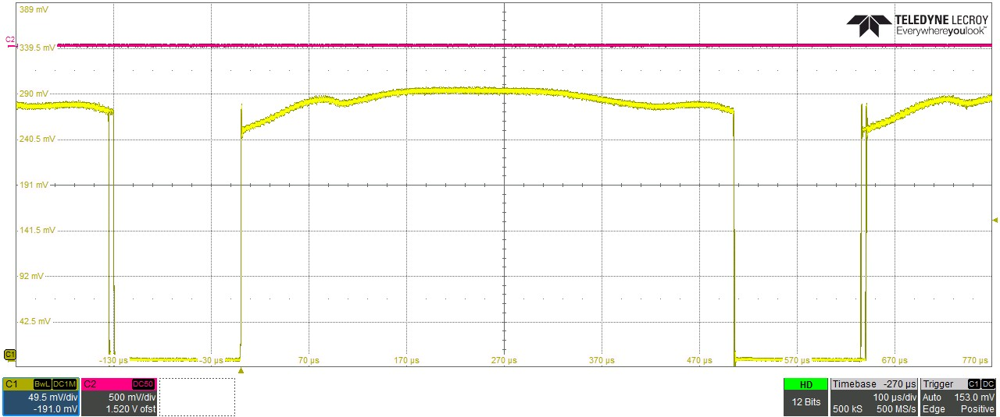

Finding Optimum Bragg
Before begining the tuning proces we must set the Bragg angle of our AOD. This process requires a level of delicate fine tuning to achieve optimal performance.
Locating Bragg at center frequency
- Set the frequency to the center of your scan range.
- adjust the Bragg angle until the optical power is maximized.


Examples of Bragg angle optimization
Balancing Bragg at edge frequency
- Set the frequency to 10% of each edge of your scan range and compare optical power.
- Adjust the Bragg angle to balance the power at both edges.
- Repeat this process until satisfied that best compamise has been found.
Expected Result
When the Bragg angle is optimized we recommend stepping through the scan range and observing the optical power output. The optimal Bragg angle is one that maximizes the optical power across the entire scan range.

Typical Deflector efficincy sweep output for reference